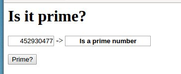
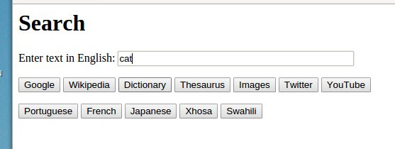
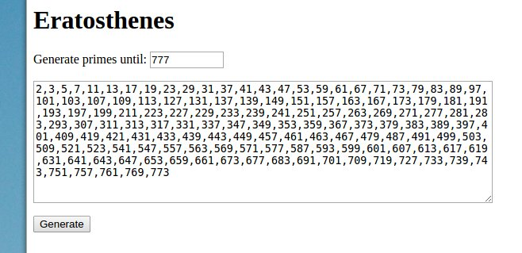

Linguagens e Ambientes de Programação (2017/2018)
Prática 10
Formulários HTML com Javascript. Exercícios de 48 a 50.
48 - Inspire-se no "Exemplo 1" da aula teórica 18 para produzir um formulário que permita ao utilizador testar se um número é primo. Na caixa da resposta deve aparecer a mensagem "Is a prime number" ou "Not a prime number". A função booleana que efetua o teste de primalidade é para escrever em JavaScript. Se tem dúvidas sobre se o número 1 é ou não primo, veja na Wikipédia.
Ajuda: Comece por copiar o "Exemplo 1" da aula teórica 18 para dentro dum ficheiro chamado "ex48.html". Depois abra este ficheiro num browser e teste. Finalmente, modifique o ficheiro "ex48.html" de acordo com o que se pede neste enunciado. Por favor, separe a parte lógica do programa (a função isPrime: int -> bool), da parte de interação com o ambiente envolvente (função runForm : Form -> void).
Depuração: Se existir algum erro no código JavaScript, a execução do programa bloqueia e nada mais acontece. Para aceder às mensagens de diagnóstico, é preciso abrir a "consola" do JavaScript dentro do browser. Na maioria dos browsers, isso pode ser feito usando a tecla F12 ou clicando na janela do browser com o botão da direita e escolhendo o item "Inspect". Depois, no painel seleciona-se o tab "Console". Ao testar a página Web com a consola Javascript aberta, as mensagens de erro tornam-se visíveis. (Se for utilizador do Safari, precisa primeiro de ativar o menu "Programação" em "Preferências > Avançadas", último item.)

49 - Inspire-se no "Exemplo 3" da aula teórica 18 para criar um formulário para fazer pesquisas na WEB e para fazer traduções. O formulário deve ter uma única caixa de texto onde o utilizador introduz a string em Inglês a pesquisar ou a traduzir. Além disso deverá ter diversos botões para permitir que a pesquisa/tradução possa ser efetuada de forma flexível em diferentes sites da Web. Veja a imagem abaixo.
Para pesquisar no Google, basta usar o prefixo "http://www.google.com/search?q=" e acrescentar o texto a pesquisar. Algo de semelhante se aplica aos outros sites, ou seja, para cada site há um prefixo diferente - tente descobrir esse prefixo. Para simplificar, o mais prático é chamar em cada botão a função runForm com dois argumentos: o primeiro argumento é a form, o segundo argumento é o prefixo associado ao site.
As páginas WEB a considerar são as abaixo. Tente descobrir quais os prefixos a usar na pesquisa.
- Google - http://www.google.com/
- Wikipedia - http://en.wikipedia.org/
- Dictionary - http://www.thefreedictionary.com/
- Thesaurus - http://thesaurus.com/
- Images - http://www.google.com/images
- Twitter - http://twitter.com/
- YouTube - https://www.youtube.com/
As línguas para traduzir são as que estão abaixo e, neste caso, oferecemos já os prefixos prontos a usar.
- Portuguese - http://translate.google.com/?langpair=en|pt&text=
- French - http://translate.google.com/?langpair=en|fr&text=
- Japanese - http://translate.google.com/?langpair=en|ja&text=
- Xhosa - http://translate.google.com/?langpair=en|xh&text=
- Swahili - http://translate.google.com/?langpair=en|sw&text=

50 - O algoritmo mais antigo para determinar números primos chama-se "Crivo de Eratóstenes" e foi inventado há cerca de 2300 anos. O algoritmo costuma ser apresentado da seguinte forma:
- Como ponto de partida, tomamos a sucessão dos inteiros a partir de 2: 2 3 4 5 6 7 8 9 ...
- Retira-se o primeiro elemento, o qual se considera gerado como número primo, e eliminam todos os seus múltiplos.
- Vai-se repetindo o processo anterior enquanto estivermos interessados em continuar a gerar primos.
Inspire-se no "Exemplo 1" da aula teórica 18 para produzir um formulário que permita ao utilizador indicar um número N para obter todos os números primos menores ou iguais a N. Na caixa da resposta, os números primos devem aparecer separados por vírgulas.
Ajuda: A parte lógica do problema deve ser programada numa função que recebe um inteiro e retorna um array de inteiros. Dentro da função, use um array de booleanos para implementar o crivo. Para criar o resultado da função, comece por definir um array vazio "var res = [] ;" e vá acrescentando os números primos usando "res.push(n) ;".
